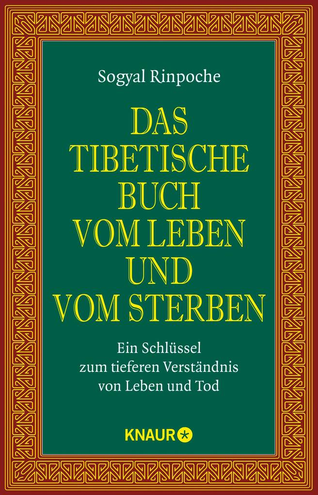

Wenn ich allein bin, denke ich manchmal darüber nach, was der Tod eigentlich ist. Dabei meine ich nicht den Tod als medizinisches Ereignis. Das kenne ich aus meinem Beruf. Ich meine meinen eigenen Tod. Er rückt näher und ich frage mich, ob man sich auf diesen Moment vielleicht vorbereiten kann.
Ein Skirennfahrer fährt vor dem Start die Strecke im Kopf ab. Er weiß, an welchen Stellen es schwierig werden könnte, abernicht, was tatsächlich passieren wird. Vielleicht kann man etwas Ähnliches mit dem eigenen Tod versuchen. Nicht um ihn zu beherrschen, sondern um sich mit ihm vertraut zu machen. Wenn ich mir heute gelegentlich vorstelle, dass mein Leben in einigen Jahren zu Ende sein wird, ist die Situation vielleicht weniger fremd, wenn es so weit ist.
Mit dieser Frage beschäftigt sich auch Sogyal Rinpoche in seinem Tibetischen Buch vom Leben und vom Sterben. Im tibetischen Buddhismus ist es normal, sich mit dem eigenen Tod zu beschäftigen. In unserer Kultur gilt eher das Gegenteil: Wir leben so, als sei unsere Existenz selbstverständlich und der Tod ein trauriger Zwischenfall, der möglichst lange nicht vorkommen sollte. Dabei ist er von Anfang an Teil des Lebens. Für Sogyal Rinpoche ist die Meditation / das mentale Training eine Übung im Loslassen. Wir verbringen unser Leben damit, ein Ich aufzubauen, Beziehungen einzugehen, Dinge festzuhalten und uns in der Welt einzurichten. Beim Sterben müssen wir schließlich alles loslassen. Warum also nicht vorher schon gelegentlich darüber nachdenken?

Das kommt meiner Vorstellung vom mentalen Training ziemlich nahe. Es geht nicht darum, sich ständig mit dem Tod zu beschäftigen. Das wäre mir zu anstrengend. Aber vielleicht kann man ihn ab und zu gedanklich an sich heranlassen, statt ihn dauernd wegzuschieben. Vielleicht verliert er dadurch etwas von seiner Fremdheit.
Als Naturwissenschaftler komme ich von einer ganz anderen Seite zu einem ähnlichen Gedanken. Der Quantenphysiker Richard Feynman meinte einmal, wenn das gesamte naturwissenschaftliche Wissen verloren ginge und man der nächsten Generation nur einen einzigen Satz hinterlassen könnte, sollte es die atomare Hypothese sein: Alles besteht aus Atomen, kleinen Teilchen in ständiger Bewegung. Das gilt für alle Lebewesen und natürlich auch für mich.
Die Atome, aus denen ich bestehe, gehören mir nicht. Ich habe sie aufgenommen und werde sie wieder abgeben. Genau genommen tue ich das bereits mein ganzes Leben lang. Ich atme, esse und trinke. Zellen sterben und werden ersetzt. Moleküle, die einmal zu mir gehörten, befinden sich längst irgendwo anders. Diesen Kreislauf und den tröstlichen Gedanken, dass in der Natur nichts einfach verschwindet, habe ich bereits in „Denn du bleibst“ beschrieben. Hier interessiert mich eine andere Frage: Was ist es eigentlich, das in diesem ständigen Austausch für einige Jahrzehnte derselbe Mensch bleibt?
Vielleicht ist ein Mensch wie ein Wirbel in einem Fluss. Wenn ich einen solchen Wirbel beobachte, erkenne ich ihn als etwas Eigenständiges. Er bleibt eine Weile an derselben Stelle und behält seine Form. Trotzdem besteht er in jedem Augenblick aus anderem Wasser. Das Wasser strömt hinein und wieder hinaus, während der Wirbel bestehen bleibt. Irgendwann löst er sich auf. Das Wasser aber ist nicht verschwunden. Es fließt weiter.
So ähnlich könnte es mit mir sein. Seit meiner Geburt strömt Materie durch meinen Körper. Sie wird für eine Weile ein Teil von mir und verlässt mich wieder. Trotzdem erlebe ich mich seit Jahrzehnten als denselben Menschen. Das Beständige an mir sind offenbar nicht die einzelnen Atome, sondern ihre vorübergehende Ordnung. Für eine gewisse Zeit hat sich im großen Strom der Materie dieser eine Wirbel gebildet, der sich Lothar nennt.
Das gefällt mir als Vorstellung. Denn dann beginnt das Sterben nicht erst mit meinem letzten Atemzug. Ein Teil von mir verschwindet schon mein ganzes Leben lang, und ein anderer kommt hinzu. Der Prozess, den ich beim Tod als etwas Überwältigendes empfinde, findet im Kleinen ständig statt. Nur die Form hält sich ziemlich lange. Irgendwann löst auch sie sich auf. Das Wasser fließt weiter.
An dieser Stelle stößt das schöne Bild allerdings an seine Grenze. Denn ein Wasserwirbel weiß nicht, dass er ein Wasserwirbel ist. Ich dagegen weiß, dass ich existiere. Ich sehe, denke, liebe, erinnere mich und kann sogar darüber nachdenken, dass ich irgendwann nicht mehr existieren werde. Woher kommt dieses Bewusstsein?
Mit den Atomen allein ist diese Frage nicht beantwortet. Wir wissen viel darüber, welche Vorgänge im Gehirn mit Bewusstsein verbunden sind. Wir können beobachten, wie Krankheiten, Medikamente oder eine Narkose das Bewusstsein verändern oder ausschalten. Vieles spricht dafür, dass es an die Tätigkeit unseres Gehirns gebunden ist. Aber warum aus elektrischen und chemischen Vorgängen in Nervenzellen überhaupt ein inneres Erleben entsteht, bleibt ein Rätsel. Warum gibt es in diesem Körper jemanden, der morgens aufwacht und denkt: Da bin ich wieder?
Hier beginnt die alte Frage nach der Seele. Vielleicht endet mein Bewusstsein einfach, wenn mein Gehirn aufhört zu funktionieren. Das ist die naturwissenschaftlich naheliegende Annahme. Vielleicht gibt es aber auch etwas, das wir noch nicht verstehen und für das Menschen seit Jahrtausenden das Wort Seele verwenden. Ich sehe keinen Grund, mir darüber den Kopf zu zerbrechen. Aber ebenso wenig muss ich so tun, als sei die Frage längst beantwortet.
Sogyal Rinpoche geht an diesem Punkt sehr viel weiter. Im tibetischen Buddhismus endet das Bewusstsein nicht mit dem Tod des Körpers. Das Sterben wird als ein Prozess verstanden, in dem sich Körper, Wahrnehmung und das gewöhnliche Bewusstsein schrittweise auflösen. Danach durchläuft das Bewusstsein weitere Zustände, die sogenannten Bardos. Schließlich folgt eine neue Existenz. Das ist keine naturwissenschaftlich belegte Erkenntnis, sondern eine religiöse Vorstellung. Aber der Gedanke, dass Tod nicht einfach Vernichtung, sondern Veränderung sein könnte, ist mir ziemlich vertraut.
Auch die Menschen, die ich geliebt habe und die gestorben sind, sind nicht vollständig verschwunden. Die Atome meines Vaters sind noch Teil dieser Welt. Sie sind nur nicht mehr in der besonderen Ordnung vorhanden, die mein Vater war. Das Wasser seines Wirbels ist weitergeflossen.
Und er ist noch auf andere Weise da. In meinen Erinnerungen, in Geschichten, in bestimmten Sätzen und vielleicht in Gesten oder Verhaltensweisen, die ich von ihm übernommen habe. Ein Teil davon ist wiederum an meine Kinder weitergegangen. Ursache und Wirkung eines Lebens enden nicht in dem Augenblick, in dem das Herz stehen bleibt.
Vielleicht waren die Vorstellungen früherer Kulturen von den Geistern der Verstorbenen deshalb gar nicht so naiv, wie sie uns heute erscheinen. Sie wussten nichts von Atomen und Molekülen. Aber sie hatten verstanden, dass ein Mensch mit seinem Tod nicht einfach aus allen Zusammenhängen verschwindet. Die Toten blieben Teil der Gemeinschaft. Man sprach mit ihnen, erinnerte sich an sie und nahm ihre Anwesenheit auf andere Weise wahr. Ob man das Geist, Seele, Erinnerung oder Wirkung eines vergangenen Lebens nennt, ist vielleicht gar nicht so entscheidend.
Ich denke dabei an meinen Vater und an seinen Tod. Kurz vor seinem Ende bäumte er sich noch einmal auf. Es wirkte auf mich, als sähe er etwas Helles oder Erfreuliches. Dann sank er zurück und starb friedlich. Ich weiß nicht, was er in diesem Augenblick erlebt hat. Vielleicht war es ein Vorgang des sterbenden Gehirns. Vielleicht war es etwas anderes. Ich werde es nicht erfahren. Aber sein Tod hat bei mir nicht den Eindruck von Schrecken hinterlassen. Er wirkte eher wie ein Loslassen.
Vielleicht hilft mir auch deshalb die Vorstellung, meinen eigenen Tod gelegentlich im Kopf vorwegzunehmen. Ich will mir dabei nichts vormachen. Sterben kann schwer sein. Es kann Angst, Schmerzen und Verwirrung geben, und ich weiß nicht, ob ich selbst einmal so gelassen sein werde, wie ich es mir heute vorstelle. Wer gesund am Schreibtisch sitzt, hat leicht philosophische Gedanken über das Sterben.
Trotzdem kann ich mir etwas zurechtlegen, auf das ich dann vielleicht zurückgreifen kann. Für eine begrenzte Zeit hat sich ein winziger Teil der Materie dieses Universums zu mir organisiert. Daraus entstanden mein Körper und mein Gehirn, meine Gedanken und Erinnerungen, meine Beziehungen zu anderen Menschen und dieses eigentümliche Bewusstsein, ich zu sein. Dann wird sich diese Ordnung wieder auflösen.
Was mit meinem Bewusstsein geschieht, weiß ich nicht. Vielleicht ist es einfach vorbei. Vielleicht bleibt etwas, das wir Seele nennen. Vielleicht ist Bewusstsein etwas, das wir noch viel zu wenig verstehen. Mit diesem Nichtwissen kann ich leben.
Denn selbst die nüchternste naturwissenschaftliche Betrachtung enthält etwas Tröstliches. Ich falle mit meinem Tod nicht aus dem Universum heraus. Der Wirbel löst sich auf, aber das Wasser bleibt im Fluss. Ein Teil von mir lebt in meinen Kindern weiter. Andere Menschen tragen Erinnerungen an mich weiter, und manches, was ich getan habe, wird noch Folgen haben, wenn ich längst nicht mehr da bin.
Vor meinem Leben war ich nicht da. Das hat mich nicht gestört. Nach meinem Leben werde ich jedenfalls in dieser Form nicht mehr da sein. Auch das muss mich eigentlich nicht erschrecken. Dieser Zustand vor und nach meinem Leben ist, wenn man es nüchtern betrachtet, der Normalzustand. Dazwischen liegen einige Jahrzehnte, in denen sich im großen Strom der Materie ein kleiner Wirbel gebildet hat, der sehen, denken und lieben konnte und sich selbst den Namen Lothar gegeben hat.
Das eigentlich Erstaunliche ist deshalb vielleicht nicht, dass dieser Wirbel eines Tages verschwindet. Erstaunlich ist, dass es ihn überhaupt gegeben hat.
Aus diesen Gedanken entstand auch mein Lied „Alles und nichts“.